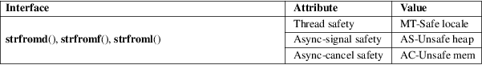

strfromd, strfromf, strfroml − convert a floating-point value into a string
Standard C library (libc, −lc)
#include <stdlib.h>
int
strfromd(char str[restrict .n],
size_t n,
const char *restrict format, double
fp);
int strfromf(char str[restrict
.n], size_t n,
const char *restrict format, float
fp);
int strfroml(char str[restrict
.n], size_t n,
const char *restrict format, long double
fp);
Feature Test Macro Requirements for glibc (see feature_test_macros(7)):
strfromd(),
strfromf(), strfroml():
__STDC_WANT_IEC_60559_BFP_EXT__
These functions convert a floating-point value, fp, into a string of characters, str, with a configurable format string. At most n characters are stored into str.
The terminating null byte (’\0’) is written if and only if n is sufficiently large, otherwise the written string is truncated at n characters.
The strfromd(), strfromf(), and strfroml() functions are equivalent to
snprintf(str, n, format, fp);
except for the format string.
Format of
the format string
The format string must start with the character '%'.
This is followed by an optional precision which starts with
the period character (.), followed by an optional decimal
integer. If no integer is specified after the period
character, a precision of zero is used. Finally, the format
string should have one of the conversion specifiers
a, A, e, E, f, F,
g, or G.
The conversion specifier is applied based on the floating-point type indicated by the function suffix. Therefore, unlike snprintf(), the format string does not have a length modifier character. See snprintf(3) for a detailed description of these conversion specifiers.
The implementation conforms to the C99 standard on conversion of NaN and infinity values:
If fp is a NaN, +NaN, or −NaN, and f (or a, e, g) is the conversion specifier, the conversion is to "nan", "nan", or "−nan", respectively. If F (or A, E, G) is the conversion specifier, the conversion is to "NAN" or "−NAN".
Likewise if fp is infinity, it is converted to [−]inf or [−]INF.
A malformed format string results in undefined behavior.
The strfromd(), strfromf(), and strfroml() functions return the number of characters that would have been written in str if n had enough space, not counting the terminating null byte. Thus, a return value of n or greater means that the output was truncated.
For an explanation of the terms used in this section, see attributes(7) and the POSIX Safety Concepts section in GNU C Library manual.

Note: these attributes are preliminary.
ISO/IEC TS 18661-1.
strfromd()
strfromf()
strfroml()
glibc 2.25.
These functions take account of the LC_NUMERIC category of the current locale.
To convert the value 12.1 as a float type to a string using decimal notation, resulting in "12.100000":
#define
__STDC_WANT_IEC_60559_BFP_EXT__
#include <stdlib.h>
int ssize = 10;
char s[ssize];
strfromf(s, ssize, "%f", 12.1);
To convert the value 12.3456 as a float type to a string using decimal notation with two digits of precision, resulting in "12.35":
#define
__STDC_WANT_IEC_60559_BFP_EXT__
#include <stdlib.h>
int ssize = 10;
char s[ssize];
strfromf(s, ssize, "%.2f", 12.3456);
To convert the value 12.345e19 as a double type to a string using scientific notation with zero digits of precision, resulting in "1E+20":
#define
__STDC_WANT_IEC_60559_BFP_EXT__
#include <stdlib.h>
int ssize = 10;
char s[ssize];
strfromd(s, ssize, "%.E", 12.345e19);
atof(3), snprintf(3), strtod(3)